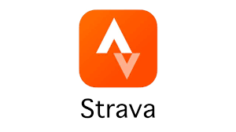
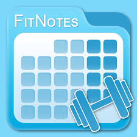

Descripción del producto final
Para el seguimiento de la resistencia, emplearemos la aplicación Strava, que permite registrar distancia, tiempo y ritmo en actividades de carrera o caminata.

En el trabajo de fuerza, utilizaremos la aplicación Fitnotes, que facilita el registro de ejercicios, series y repeticiones, permitiendo llevar un control estructurado de tus entrenamientos.

Como producto final, elaborarás una presentación digital mediante Canva, en la que mostrarás de forma visual tu evolución a lo largo de todo el proyecto, incluyendo datos registrados, gráficos y una reflexión sobre tu progreso.